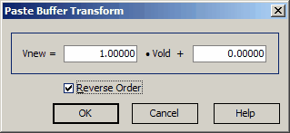

Trasform function

The Transform function allows you to recalculate all data in the Paste buffer using a simple linear transformation:
Vnew = A * Vold + B,
where coefficients A and B can be specified in the Transformation dialog.
It is possible to Reverse the Order of values in the clipboard.
After pressing the OK button, the transformation function will be applied to the data in the clipboard.